Overview
Toothless is a Level 2 high-power rocket designed as a testbed for student-researched and designed (SRAD) propulsion
hardware. I was responsible for the entire airframe, from CAD through to manufacturing, including a
3D printed fibreglass-reinforced nose cone, carbon fibre airframe tube, carbon fibre reinforced
plywood fins, and worked along side a team of recruits to design and test a custom SRAD hybrid rocket engine Bigbino.
The goal was to build a recruit designed and manufacterd hybrid engine,
this expanded into further manufacturing a structurally efficient,
re-usable platform that could carry the hybrid engine
and avionics stack safely through boost, coast and recovery while demonstrating reliable composite
manufacturing and integration at the L2 scale.
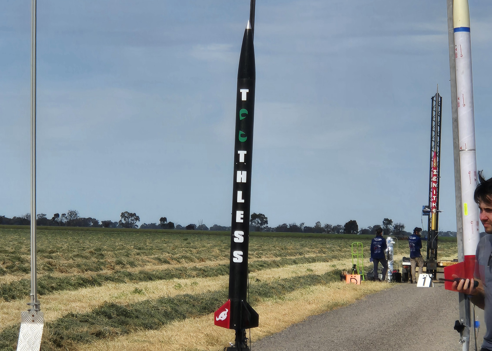

Build Overview
The build covered everything from CAD and 3D printing through composite layups, fin can assembly
and full vehicle integration.
initially starting with prototyping different materials and layup techniques to finalising
the build process for each component. The final assembly involved multiple fit checks, bonding
steps and surface finishing to ensure a clean, reliable airframe.
The process spanned several months and culminated in a series of manufacturing milestones and challenges.
It concluded with ground testing of the recovery system and integration before the maiden flight.
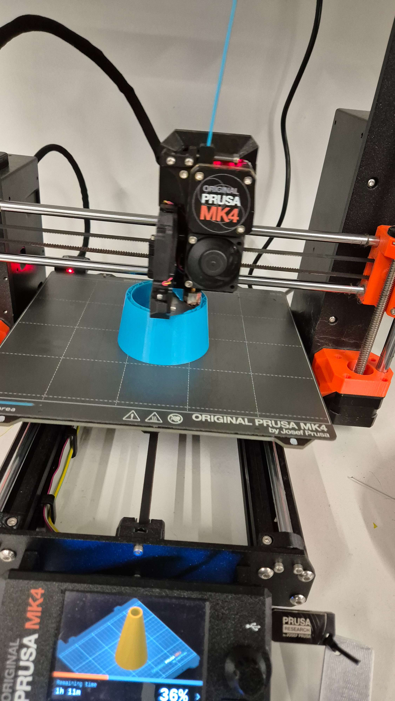

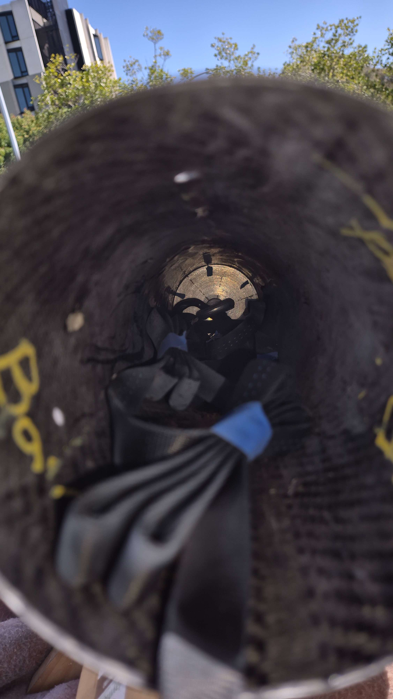
Airframe Architecture
The airframe was designed around a semi-modular layout: nose cone with a imbedded avionics bay and the main carbon fibre body tube with the integrated fin
can, allowing for easy access to electronics and motor replacement without having to disassemble or destroy the airframe. while its not fully modular,
this approach allowed for quick turnaround between flights and easier maintenance without rebuilding the entire rocket from parts.
each section was first prototyped and tested before committing to the final build to ensure fit, finish and structural integrity.
The main components included:
- 3D printed PLA nose cone reinforced with external fibreglass skins, and a bolt on aluminum nosecone tip.
- Carbon fibre tube forming the main body, laid up over a mandrel for stiffness and low mass.
- Through-the-wall plywood airfoil fin wrapped in carbon fibre, bonded into a fin-can section.
- Dedicated avionics bay for flight computer, batteries and wiring within the nosecone for radio transparency.
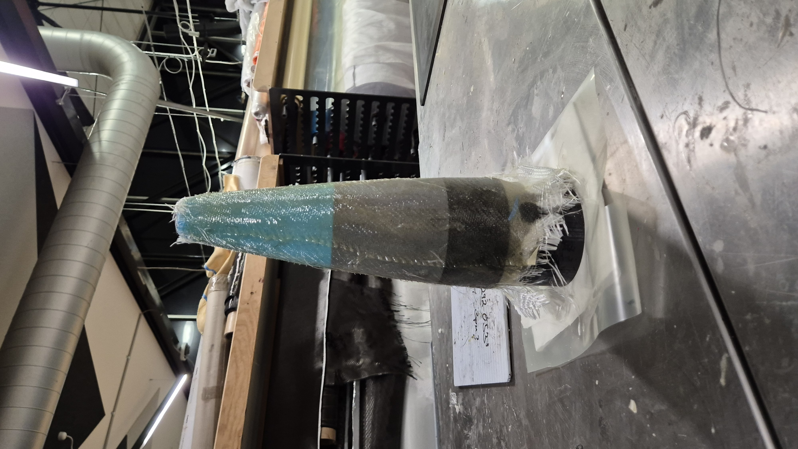
NOSE CONE
3D printed core with fibreglass wrap for impact resistance, later sanded for surface quality maximising areodynamics.
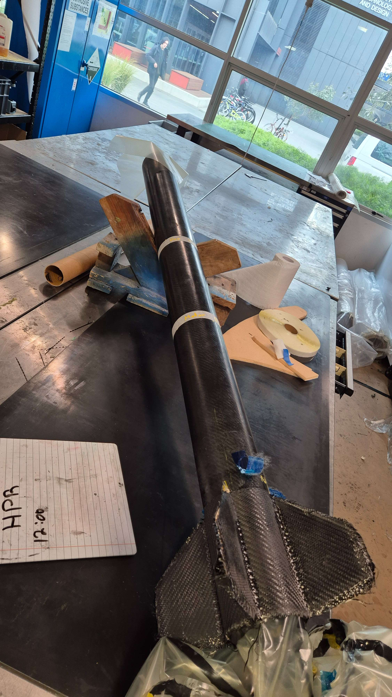
CARBON FIBRE TUBE
Composite body designed for bending stiffness, low mass and clean smooth outer finish. premade by the team with intensive finishing process was applied.
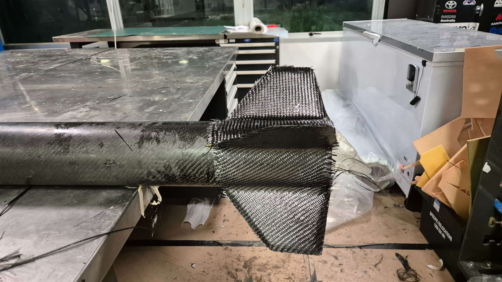
FIN CAN
Carbon wrapped plywood fins bonded through the wall into the motor mount for strong load paths and minimising aby fin flutter even at high speeds.
Nose Cone Design & Build
The nose cone started as a 3D CAD model sized to match the rocket diameter and desired parabolic profile.
The core was 3D printed in 3 segments, then bonded with glue, followed by a rough sanding to prepare for bonding.
finally fibreglass skins were applied over the surface and vaccume bagged to create a strong, impact resistant shell which could handle much greater landing loads.
this was sanded to a 2000 grit finish before painting and applying decals.
The nose cone tip was CNC machined from aluminum to provide a durable leading edge and mounting point for the recovery system, while adhearing to the profile to maximmise apogee.
The internal volume was reserved for the avionics sleds, which housed the tracker and deployment hardware,
and a simple plywood was added at the shoulder to interface with the recovery system and seal off the avionics from any black powder residue, blowback and corrosion.
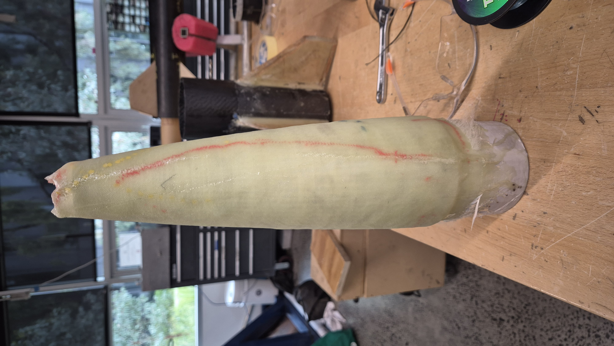
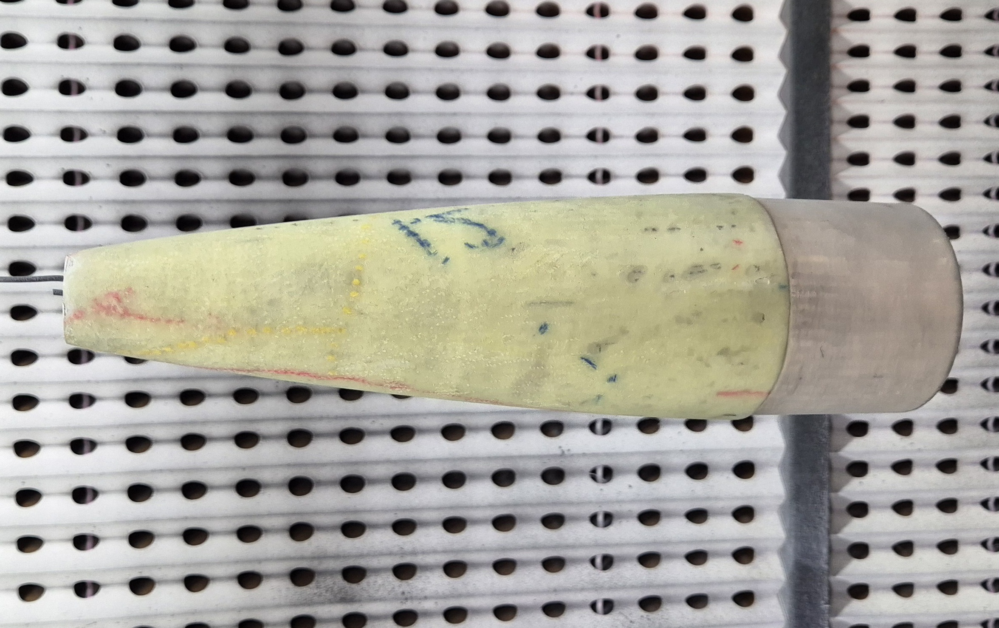
Carbon Fibre Tube & Fins
The main body tube was produced by a team member experienced in composite layups. It was constructed
over a mandrel using twill and uni-directional carbon fibre for axial, bending and torsional strength.
Multiple layers were applied with a vacuum bagging process to ensure good resin distribution and consolidation.
After curing, the tube was removed from the mandrel and trimmed to length.
The outer surface was sanded and finished to a high standard to reduce drag and improve aesthetics.
Internal reinforcements were added at key load points in the form of aluminum bulkheads, such as the fin can and top motor mount interfaces.
A small hole was drilled near the top to allow for Bigbinos vent tube to pass through and avoid pressure build up during motor operation.
Fins were cut from plywood, profiled and then wrapped in carbon fibre to improve stiffness and edge
durability. A through-the-wall design tied the fins into the internal fin can to create a
robust load path from aerodynamic forces into the airframe.
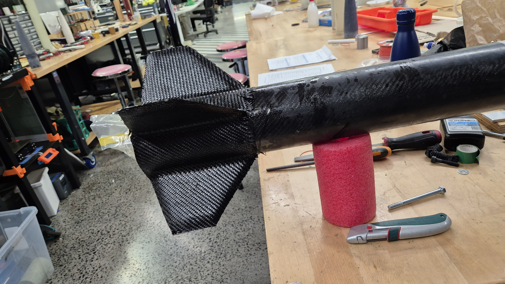
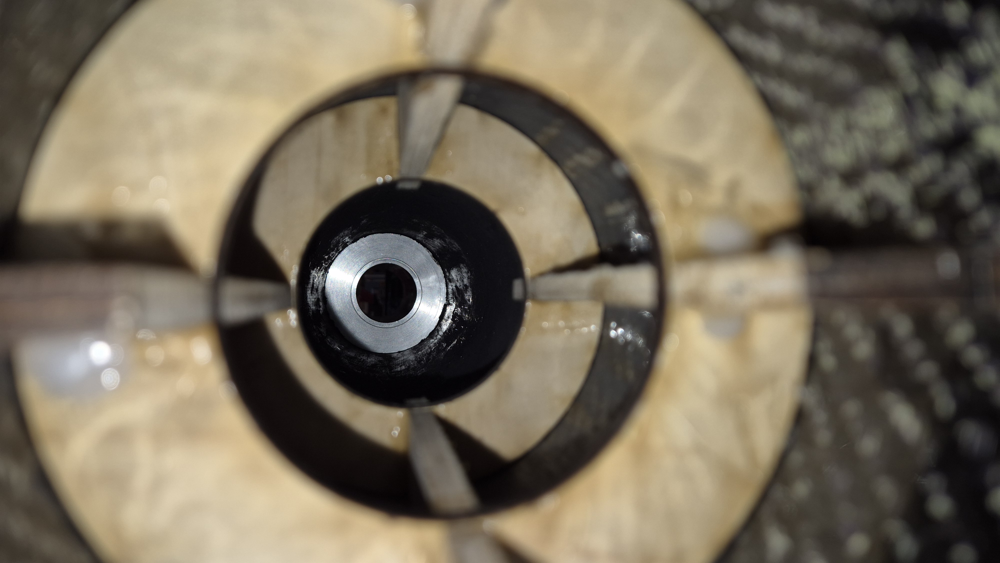
Material & Layup Details
Different fabrics, resin systems and layup techniques were tested before committing to the final
schedule used on the flight article.
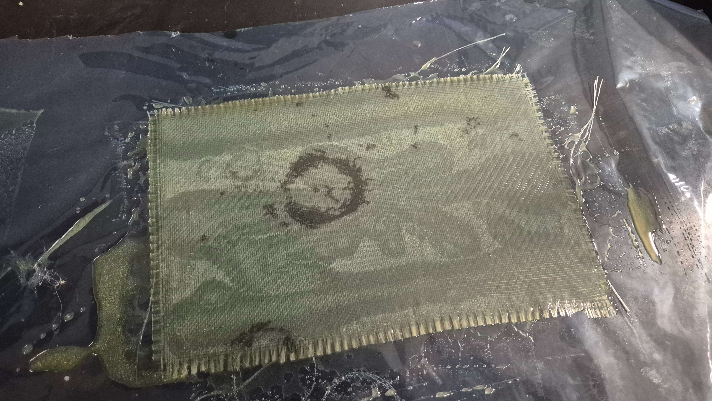
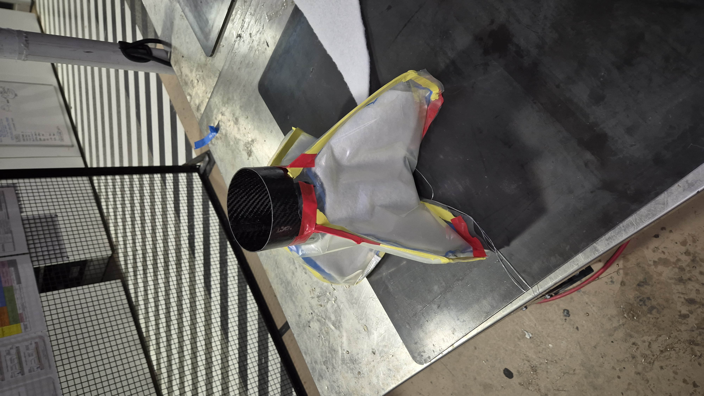
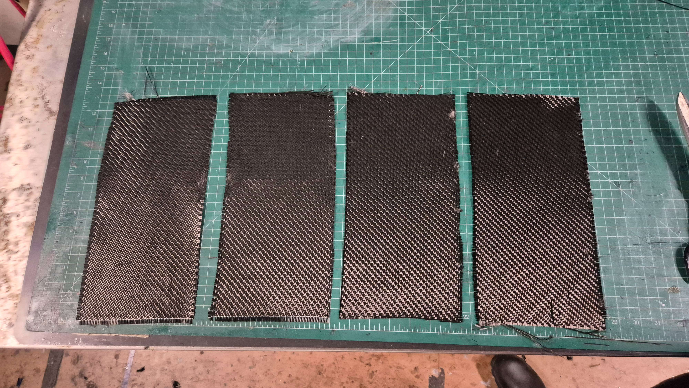
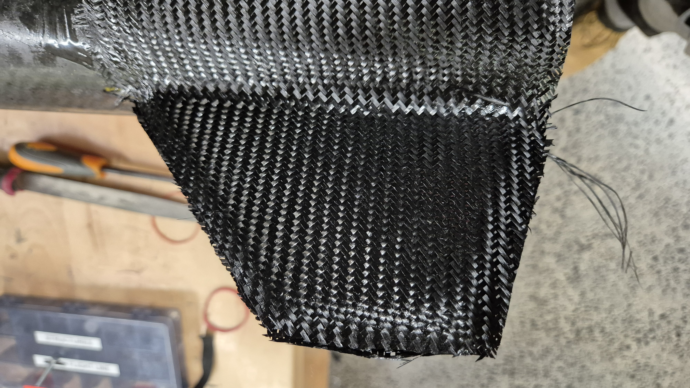
SRAD Hybrid Rocket Engine - TEAM SECTION ASK THEM
Toothless was powered by a custom student-researched and developed hybrid engine. The design
pulled together injector, combustion chamber, grain geometry and nozzle into a single integrated
package sized for a Level 2 flight envelope.
The engine was designed around a safe oxidiser flow rate, regression rate estimates and thrust
requirements for the chosen airframe and launch site constraints. Particular care was taken with
ignition strategy, sealing and mounting hardware.
Integration & Avionics
The airframe, engine and avionics were integrated through a central motor mounting fin can and removable
avionics bay in the nose cone. The bay held the flight computer, power system and wiring for pyro channels and
tracking. the whole assembly was sandwiched between the nosecone tip and shoulder bulkhead using a threaded rod and eyebolt, allowing for secure mounting with no force loads through the electronics.
There was access ports to arm the system on the pad through a small hole drilled in the fiberglass shell.
Internal structure was arranged so that thrust, fin loads and recovery forces were all transmitted
along clear, reinforced paths, reducing the chance of local failures during boost or deployment.
All thrust loading transitioned through the fin can to the body tube,
while recovery loads were taken by the nose cone shoulder bulkhead eyebolt.
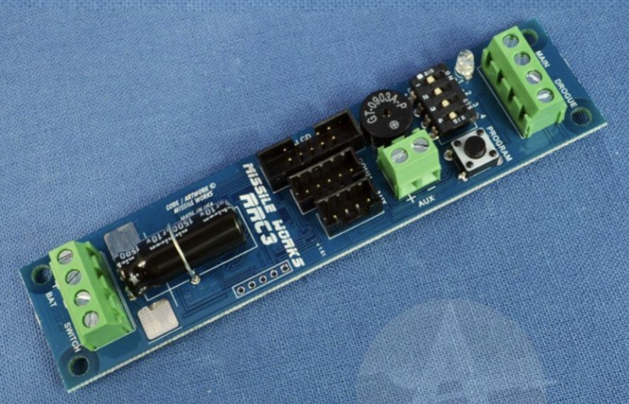
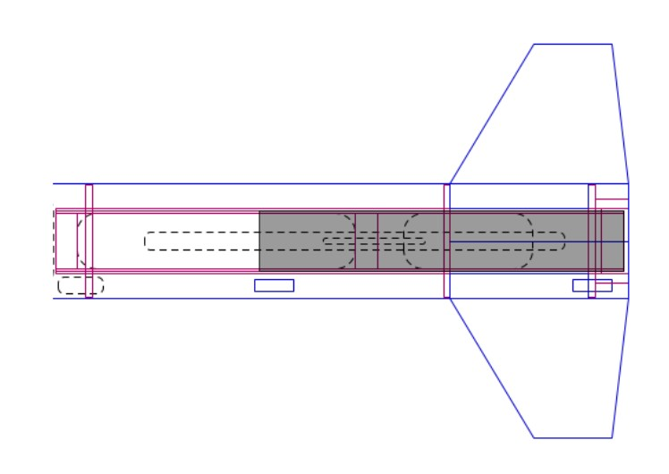
Testing
Before flying, the airframe and recovery system were ground tested, including shock-cord tests, ejection
charge verification and fit checks of all sections. The hybrid engine underwent separate subsystem
checks for sealing and ignition. Once integrated, a full systems check was performed to ensure
everything was functioning correctly before transport to the launch site.
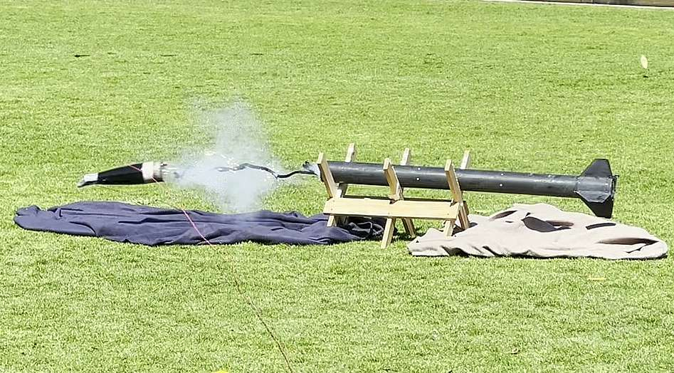
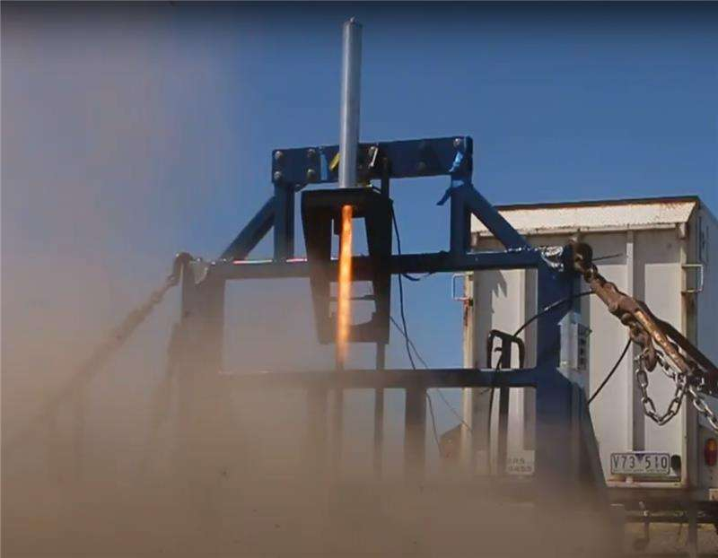
Workshop Process
The build involved 3D printing, surface finishing, composite layups, sanding, bonding and repeated
fit checks to ensure everything assembled cleanly. Each stage required careful attention to detail
to maintain tolerances and surface quality. The following images highlight key stages in the manufacturing and finished results:
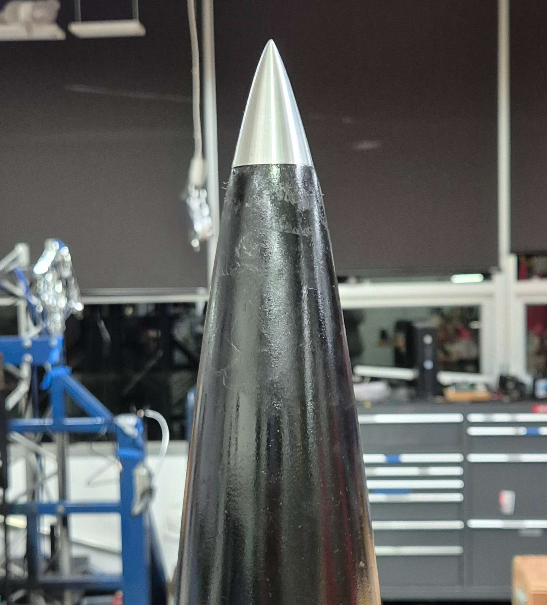


Outcome & Reflection
Toothless consolidated a full stack of skills: 3D CAD, composite manufacturing, hybrid engine design
and high-power rocketry integration. Building the rocket from the nose cone down to the fin can and
propulsion system gave a much deeper understanding of how each subsystem affects reliability,
preformance and integration challenges.
The project also provided a stepping stone towards more advanced composite manufacturing and hybrid
propulsion work at higher altitudes and larger scales.